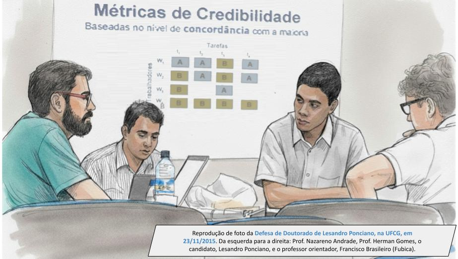

The PhD 10 years after the viva
By Lesandro Ponciano  , on 3 November 2025.
, on 3 November 2025.
When analysing the text of a doctoral research project, much is revealed, but not everything is visible. It is essential to look beyond the document. One must observe the complete process, understanding how ideas developed and took shape in the final text. Furthermore, it is necessary to verify what occurred after the formal conclusion of the research. What were the outcomes and repercussions? What proved useful and what was lost over time? As José Saramago aptly put it in the book The Cave: "Time is a master of ceremonies." It puts each thing in its proper place. Time is essential for solid reflection. Therefore, in the scientific milieu, it is highly valuable to observe experiences and results with temporal detachment.
This month marks 10 years since the viva of my PhD research. It concerns the work entitled Human Computation in the Perspective of Human Engagement and Credibility and Task Replication (written in Portuguese with the title: "Computação por humanos na perspectiva do engajamento e credibilidade de seres humanos e da replicação de tarefas"). It was conducted under the supervision of Professor Francisco Brasileiro (Fubica), at the Federal University of Campina Grande (UFCG). I dedicated myself exclusively to this work between the years 2012 and 2015. The viva of the final result took place on 23 November 2015. The examiners were Professor Jussara Marques de Almeida (UFMG) and Professors Rafael Duarte Coelho dos Santos (INPE), Herman Martins Gomes (UFCG) and Nazareno Ferreira de Andrade (UFCG). The slides used in the viva are available online. The image below is a drawing made from a photo taken during the questioning moment of the viva. Professor Jussara and Professor Rafael do not appear in the image as they were not present in person and participated in the viva remotely.

The objective of this text is to revisit the work and its development process under a reflective perspective. Ten years later, it is possible to synthesise some lessons learned. Many accounts and stories presented here are not present in the thesis. They are highly personal contents that were not suitable for discussion in the thesis or whose significance and importance were not yet fully understood. I learned, above all, that science is never a solitary journey: it flourishes in dialogue with colleagues, volunteers and communities, and this collective character reveals lessons that cross disciplinary boundaries and remain valid over time. The text is structured around the following essential questions:
What is the essence of the contribution defended in the doctoral thesis?
For the analysis of the context of a PhD work, it is necessary to understand its essence, which is the thesis it defends. Thus, one starts from this point. The thesis defended in the PhD research is that:
- human beings, when volunteering to perform cognitive tasks in computer systems, present different behaviours associated with participation in task execution (engagement) and different levels of accuracy associated with cognitive capacity in task execution (credibility);
- to achieve effective and efficient participation, it is essential to consider these human characteristics in the operational mechanisms of computer systems (such as in the replication of tasks assigned to humans).
The research emphasizes tasks of human computation. These tasks are common in systems such as reCAPTCHA, Amazon Mechanical Turk and Zooniverse. The study highlights activities that are part of scientific projects, in which volunteers participate by performing cognitive tasks necessary to obtain a scientific result. These projects are analysed in an interdisciplinary framework that interrelates the areas of Computer Science, Psychology and Sociology. The object of study is human cognition and behaviour, in an individual and collective manner, within the context of a computer system. Due to this emphasis, the work presents contributions in the fields of engagement, credibility and task replication in distributed computing systems. The contributions are discussed below.
The research proposes metrics to measure the engagement of volunteers working on the projects: 1) activity rate; 2) relative duration of activity; 3) daily time dedicated; and 4) variation in periodicity. Human engagement refers to the participation pattern of individuals who volunteer to perform cognitive tasks in computing systems. A profile discovery method is also proposed, through the grouping (clustering) of volunteers based on the metric values. The use of these metrics and methods in real projects reveals the existence of two main classes of cognitive power supply: transients and regulars. Volunteers presenting regular engagement subdivide into five distinct profiles: hard-working, spasmodic, persistent, lasting and moderate. This contribution and its results constitute important extensions of two classic works in the literature on engagement and volunteering: What is User Engagement? A Conceptual Framework for Defining User Engagement with Technology and Volunteering.
Human credibility refers to the degree of trust that can be attributed to the responses provided by human participants in cognitive tasks.The research proposes metrics to measure credibility in the execution of this type of task: 1) surface; 2) experienced; 3) presumed; and 4) reputed. Each metric represents a distinct indicator of the degree of trust that can be attributed to the response provided by a person. The metrics are applied to real projects, and the results demonstrate that credibility varies according to the metric used. Furthermore, in non-factual tasks, human credibility shows a negative correlation with task difficulty. This contribution was developed based on two classic works in the literature on credibility: Believe It or Not: Factors Influencing Credibility on the Web and Credibility: A Multidisciplinary Framework.
Adaptive task replication is a strategy that dynamically adjusts the number of times a task is replicated. In the thesis proposal, this adjustment is made by considering the participants' credibility and the difficulty of the task.Finally, the research proposes a task replication algorithm. This algorithm considers people's credibility and the difficulty of the tasks when defining the level of redundancy to be used in each case. The results of its application with real data show that it uses human resources (cognitive power) more efficiently than traditional fixed approaches, reducing unnecessary redundancy. This approach also facilitates the identification of unresolved tasks, that is, those that have not reached the credibility threshold, regardless of the level of redundancy. This occurs in tasks so difficult that laypeople do not converge on a single answer. This identification allows users to direct specialised attention to this type of task. The main study on which this contribution is based is the paper Sabotage-Tolerance Mechanisms for Volunteer Computing Systems.
How was the doctoral thesis research proposal born?
In the late 2000s, the field of human computation was beginning to gain prominence. The first workshop dedicated to the subject, in 2009, showed the potential of systems such as reCAPTCHA and Amazon Mechanical Turk. A few years later, reference papers, such as the classic paper entitled Human Computation: A Survey and Taxonomy of a Growing Field, consolidated the field and sparked the interest of researchers in various parts of the world.
In Brazil, there were still no research groups acting directly in this domain. It was in this scenario that the Distributed Systems Laboratory (LSD/UFCG) started its first related projects, under the leadership of professors who already had experience in distributed systems. This environment was decisive for the doctoral proposal to emerge and find space to be further developed.
The study analyses human computation from a distributed systems perspective, aligning with the expertise of LSD/UFCG. This decision stemmed from previous research experiences. It proved easier to situate the research within this perspective than in a purely Psychological or Sociological approach. The first challenge of the doctoral research was to elaborate this perspective. The result of this effort was the literature review that interprets the field of human computation from a distributed systems perspective. This review consolidated such a perspective and guided the other dimensions of analysis addressed in the thesis. The context in which each dimension emerged is discussed below.
The human engagement dimension deals with the supply of computational power to the human computation system. It was built upon inspiration from the supply of machine computational power in systems such as volunteer computing and opportunistic computing grids. The first paper on engagement, published as part of the doctoral work, identifies probability distributions of participation for people offering cognitive power in these systems. This analysis was strongly inspired by probability distribution models for resource availability in systems such as computing grids. Subsequently, the discovery of engagement profiles sought to identify the typical models of cognitive power supply. The inspiration for this came from studies of behavioural patterns in cooperative systems, such as Wikipedia and open-source projects.
The need for studies in the human credibility dimension emerged from the observation that the mere participation of individuals did not guarantee the reliability of the results obtained in the projects. In other words, the study of engagement alone was not enough. Research in this credibility dimension was strongly inspired by previous work on fault tolerance and sabotage tolerance in computing systems formed by digital computers, areas in which the supervisor, Professor Francisco Brasileiro, had extensive experience. However, it was necessary to turn to Human Error Theory and the Theory of Bounded Rationality to explain the variation in people's credibility in these new computing systems, where cognitive tasks are performed by human beings. The need for a replication algorithm emerged from the observation that a large part of people's contribution was spent on redundancy to detect errors, representing a significant waste of the cognitive power provided. The algorithm was proposed to optimise the use of this cognitive power.
Which projects were crucial to the development of the doctoral research?
Here, the projects that provided fundamental empirical data for the research are detailed. These include international citizen science projects, Brazilian initiatives, and commercial online labour platforms. Throughout the four years of the research development, several partner projects allowed for the collection of data that proved essential to the study. The main projects discussed below are: Zooniverse, Socientize, Memória Brasil, and Online Labour Markets.
The Galaxy Zoo, The Milky Way Project, Socientize, and Memória Brasil projects fall under citizen science. Citizen science is a movement that advocates for greater participation of the general public in scientific research. It is often called the science of everyone, by everyone, and for everyone. People's participation in scientific research can take various forms, from research design to the analysis of results. These projects deal with people's participation through the execution of cognitive tasks necessary to obtain a scientific result. The Galaxy Zoo, The Milky Way Project, and Socientize projects were world pioneers in this domain. IPEA's Memória Brasil project was a pioneer in citizen science initiatives in Brazil.- Galaxy Zoo and The Milky Way Project on the Zooniverse platform: Galaxy Zoo and The Milky Way Project are international citizen science projects based on cognitive tasks, primarily identifying information in images of galaxies. These projects were created and maintained by astrophysicists at the University of Oxford. The editions that ran between 2010 and 2012 are the main sources of empirical data analysed in the thesis. The project data were provided by their maintainers, Arfon Smith and Robert Simpson. Both are co-authors of the first paper developed as part of the thesis, which examined volunteer behaviour when contributing to computational and scientific tasks. Contact with the team of these projects began through researcher Philip Brohan from the Old Weather project, whom Professor Francisco Brasileiro had met a few years earlier. The main results obtained in the doctoral research — modelling volunteer engagement behaviour using probability distributions and characterising volunteer profiles through clustering — derived from data from the Galaxy Zoo and The Milky Way Project. The dataset is publicly available.
- The EU-funded Socientize project: Socientize is an international citizen science project funded by the European Union under the 7th Framework Programme (FP7). The project was coordinated by the University of Zaragoza, Spain, in partnership with the Ibercivis Foundation. The other project partners are institutions in Austria, Brazil and Portugal. The project ran between 2012 and 2014, with the Brazilian focal point being LSD/UFCG. One good outcome of this project is the document White Paper on Citizen Science for Europe. Among the dozens of participants listed on the cover of the document are Francisco Brasileiro, Nazareno Andrade and Lesandro Ponciano from UFCG/Brazil. This White Paper was one of the first documents to present a strategic vision of citizen science. To this day it remains an important reference for the field worldwide. Some citizen science pilot projects of Socientize were partially developed at LSD/UFCG, including Cells Spotting and Sun4All, whose data are used in the engagement study that is part of the doctoral research. In the Cells Spotting project, volunteers identified cancerous cells in images, while in Sun4All they counted sunspots from images of the Sun. Much of the contextualisation of citizen science presented in the doctoral thesis is based on discussions held within the Socientize project.
- The Memória Brasil project of the Institute for Applied Economic Research (IPEA): IPEA had been fostering citizen science efforts in Brazil since the Citizen Science Meeting in Brazil, held in 2011. In a collaboration between IPEA and LSD/UFCG, the Memória Brasil project sought to create an infrastructure where volunteers contributed by transcribing statistical tables extracted from books on the country’s economic history. The first paper written at LSD/UFCG involving the participation of people in computational tasks was developed in the context of this project. This is the paper Estratégias de Obtenção de um Item Máximo em Computação por Humanos, published at the 31st Brazilian Symposium on Computer Networks and Distributed Systems (SBRC 2013). In the same year, data from this project were analysed in the short paper that outlined some of the challenges addressed in the doctoral research, such as volunteer engagement and task replication. Several colleagues from LSD/UFCG worked in conjunction with this project, including Jeymisson Oliveira and Guilherme Gadelha, who at the time were undergraduate research students.
The analysis of these projects shows that doctoral research does not take place in isolation. It develops in interface with other scientific and technological initiatives, public and private, commercial and non-commercial. Although the research does not need to be entirely applied in nature, these interfaces keep it close to the concrete reality of the object to which it refers. This is the case, for example, in the study of human computation not only as something theoretical, but also as applied to computing systems, citizen science, online labour markets and commercial initiatives. To build these interfaces, the research laboratory, the university and the supervisor are crucial.
How were the research results disseminated to the scientific community and to society?
The scientific communication initiative, aimed at disseminating results among scientists, basically consisted of publishing papers and presenting work at conferences. Regarding the latter, results were disseminated at events such as: data on task redundancy, presented in a lightning talk at HCOMP 2013; results on volunteer credibility, presented as a poster at HCOMP 2013; analyses of citizen engagement, presented in a lightning talk at IEEE eScience 2014; and the adaptive replication strategy, presented at SBRC 2014. The published papers are listed in the next section.
Public engagement initiatives were pursued, aimed at laypeople or those working in other areas of knowledge. At the time, LSD/UFCG maintained a blog called Pensadouro LSD, in which several texts about the doctoral work were published in 2014, including one entitled Qual a Relação entre Computação por Humanos e Sistemas Distribuídos? and the text Contribuição de Voluntários em Projetos Científicos que Utilizam Computação por Humanos. The area was also disseminated to undergraduate students, as in the text Computação por Humanos, published in 2012 in the newspaper PET News, da Computação UFCG.
After the defence, other public engagement efforts followed. In 2018, the text Perspectivas em Computação Social was published in the magazine Computação Brasil; the text A Ciência Cidadã no Brasil was published in the newspaper Estado de Minas; and the interview "Ciência Cidadã" was recorded for the programme Horizonte Notícias Entrevista on TV Horizonte. More recently, during the COVID-19 pandemic, there was participation in the effort for the book Dossiê Contra o Negacionismo da Ciência: A Importância do Conhecimento Científico, published in 2022 by Editora PUC Minas. The book seeks to highlight the importance of scientific knowledge amid a wave of obscurantism and denialism that was growing in that very challenging context. The contribution was the chapter A Participação Popular nas Ciências Exatas e Informática e seus Efeitos no Conhecimento Científico e Tecnológico, which seeks to emphasise the importance of popular participation in science as a way of understanding scientific knowledge and mastering the scientific method.
Ten years later: what is the impact of the scientific papers published as part of the research?
Assessing the impact of scientific work is always challenging. Ten years after the defence, it is possible to analyse some indicators associated with the attention received by the papers published during the research. The table below summarises this work, highlighting a quantitative analysis of the number of citations and a qualitative analysis of the contributions that were most taken up by other researchers.
| Title | Venue | Year | Access | Citations* | Impact and Citations |
|---|---|---|---|---|---|
| Agreement-based Credibility Assessment and Task Replication in Human Computation Systems | Future Generation Computer Systems | 2018** | Paid | 10 |
The papers highlight the proposed operationalization that incorporates humans as a component of the distributed system. |
| Finding Volunteers' Engagement Profiles in Human Computation for Citizen Science Projects | Human Computation journal | 2014 | Open | 134 |
The papers cite the engagement metrics, the method for discovering profiles using clustering, and the discovered profiles. Dozens of papers present a replication of the profile discovery method in other projects.
Semantic Scholar*** identified 12 papers that were highly influenced by this publication (October/2025) - papers that replicate the proposed method.
|
| Volunteers' Engagement in Human Computation for Astronomy Projects | Computing in Science & Engineering | 2014 | Paid | 74 |
The papers mention the finding that most people contribute to projects on only one day and never return, showing that participation of volunteers in citizen science and human computation is more temporary (transient) than previously thought.
Semantic Scholar*** identified 4 papers that were highly influenced by this publication (October/2025) - papers that reuse the proposed engagement metrics.
|
| Considering Human Aspects on Strategies for Designing and Managing Distributed Human Computation | Journal of Internet Services and Applications | 2014 | Open | 40 |
The papers cite the conceptual framework that integrates human factors, quality of service (QoS) requirements, and system design and management strategies. Papers also cite some of the human aspects (or the full list) presented in the work. |
| Adaptive Task Replication Strategy for Human Computation | Brazilian Symposium on Computer Networks and Distributed Systems | 2014 | Paid | 3 |
The papers cite the replication process in human computation. |
| Task Redundancy Strategy based on Volunteers' Credibility for Volunteer Thinking Projects | AAAI Conference on Human Computation and Crowdsourcing | 2013 | Open | 5 |
The papers cite the concept of redundancy to achieve quality in tasks performed by humans. |
* The number of citations is the sum of citations in Google Scholar + Google Books as of October 31, 2025.
** Paper published in 2018, but developed during the PhD.
*** Semantic Scholar identifies papers in which the cited publication has a significant impact. Influential citations are determined using a machine learning model that analyzes a range of features.
This analysis shows that some contributions, such as the engagement metrics and the engagement profile discovery method, have been more widely replicated and used by other researchers over the past few years. There is also a large difference in the level of attention each paper has received from the scientific community; the works that had citizen science as their main framework have received more attention. Several factors may explain this outcome. It is not only about the quality of the results and contributions of the work, but also about the level of research activity in the area addressed by the work. A few years after the conclusion of the doctoral research, there was a reduction in the amount of research in human computation, while the field of citizen science continues to expand to this day.
What interesting activities took place after the doctoral thesis defence?
During the 10 years that followed the defence of my PhD, several activities of relevance took place and are worth mentioning. They were driven by the knowledge and experience accumulated during the conduct of the research. Some of these activities are discussed below.
In the years following the defence, I delivered several talks on participatory and citizen science. A recurring observation in these talks is how much people enjoy and are fascinated by science when they are younger and, after a few years, most end up drifting away. Almost all recall some interesting experiment they carried out at school, such as planting beans in different containers with water and cotton. However, few computing courses offer the memory of any striking experiment at university — something that is, at the same time, playful, surprising and revealing. For a long time, this sparked my interest in engaging undergraduate students more deeply in scientific research. I included scientific papers in the courses I teach, chose to deliver content related to computing research that involves replication and reproduction of scientific studies, and took on research coordination roles. These are actions aimed at bringing students closer to science within their field of activity.After 2015, the field of citizen science grew substantially worldwide. The Citizen Science Association emerged (recently renamed the Association for Advancing Participatory Sciences – AAPS), of which I was a member for several years. In Brazil, in 2017, the Ministry of Science, Technology and Innovation (MCTI) organised the first SIBBr Citizen Science Workshop, in which I took part. In 2019, the Red Iberoamericana de Ciencia Participativa (RICAP) was established, of which I am one of the founders, together with 18 other researchers from the region. More recently, in 2022, Civis: Citizen Science Platform was launched, an initiative of the Brazilian Institute of Information in Science and Technology (IBICT), which I had the pleasure of following from the outset.
In the scientific field, the most impactful activity after my PhD was my participation in the paper Citizen Science Terminology Matters: Exploring Key Terms, published in 2017. This was an effort by 23 researchers from around the world, in which I was the only Brazilian researcher. The work was led by M. V. Eitzel, from the University of California, Davis, and is an important contribution to the understanding of the “citizen science” movement and people’s participation in it. It is a highly influential study in the field, which has already received more than 900 citations in other academic and scientific works. Another relevant outcome is the paper Characterising Volunteers' Task Execution Patterns Across Projects on Multi-Project Citizen Science Platforms, published in 2019 with Thiago Emmanuel. This work has proved useful for researchers seeking to understand whether, and how, participants engage in platforms hosting multiple citizen science projects. In 2020, another important collaboration also took place, namely the mapping study Citizen Science from the Iberoamerican Perspective: an Overview, and Insights by the RICAP Network. This work was led by Natalia Piland, who at the time was at the University of Chicago. It involved the participation of 12 researchers from the Ibero-American region, in intensive discussions and data analysis. It sought to map citizen science initiatives in this region.
More recently, in November 2024, I delivered, together with Professor Sarita Albagli (Ibict and UFRJ), lectures at the Citizen Science Masterclass, organised by the Economic Commission for Latin America and the Caribbean (ECLAC), of the United Nations (UN), and by the Association of European Research Libraries (LIBER). My talk addressed the topic Building Capacity in Citizen Science: Data, Information and Knowledge in the Construction and Sharing of Knowledge.
There are several other activities that took place after the defence of my PhD which are not directly related to the topics researched during the doctorate, but which only occurred (or were facilitated) due to holding a doctoral degree. This includes professional activities such as teaching undergraduate courses in Information Systems and Software Engineering, participation in master’s thesis defence committees, conducting research projects, as well as a period of postdoctoral research.
What were the main challenge and the main source of satisfaction in the PhD research?
Summarising the PhD experience is not straightforward. Ten years after the defence, I highlight one challenge and one source of satisfaction that still stand out — and with which I believe many others may identify.
The main challenge was the radical change of field compared to my master’s degree. While the master’s focused on energy efficiency in distributed systems, involving the fields of Electrical Engineering, Computer Architecture and Operating Systems, the PhD turned to human behaviour in human computation, involving Human–Computer Interaction, Psychology and Sociology. In one year I was studying processor frequency; in the next, motivation for volunteering. This transition required relearning methods and concepts.
The challenge of interdisciplinary research and the satisfaction of following the literature over time brought me many insights. One of these was the discovery of, and my interest in, studies in the field of volunteering. For the thesis and the resulting papers, the concepts of volunteering versus helping behaviour, common in sociology, were articulated. These concepts helped to explain that what most people do in citizen science based on human computation does not constitute sustained volunteering, but rather sporadic help. I have followed this literature over recent years, and many important new concepts have emerged, aligning with the discussions presented in the thesis — among them microvolunteering and spontaneous volunteering. It is a fascinating body of literature.Writing papers with a strong intersection with areas such as Sociology and Psychology, as someone trained in Computer Science, was particularly challenging. The learning curve was long. Although interdisciplinarity is often advocated, interdisciplinary work is frequently seen as a “poor relation”. This became clear in the paper Considering Human Aspects on Strategies for Designing and Managing Distributed Human Computation, which was rejected several times before being published. Even so, I consider it one of the most important works in my career, precisely because of the conceptual framework it proposes. Considerable effort and persistence are required to find the balance between the different disciplines that make up interdisciplinary work.
Despite the difficulties, this journey broadened my perspective. In teaching, I realised that I am able to move confidently from the lowest level of hardware (Architecture, Operating Systems) to the highest level of interaction with people (Human–Computer Interaction). The effort was worthwhile for giving me a more comprehensive understanding of the computing system, from hardware to the human element.
The main source of satisfaction was following, over four years, the development of the fields of human computation and citizen science: communities organising themselves, journals and conferences emerging, and modest publications becoming references. This continuous engagement taught me to value not only new work, but also how it connects with earlier research. Seeing the impact of a paper after its publication is something that still motivates me today.
Another benefit of following the field daily over four years was the interaction with colleagues during the PhD. For instance, we had discussions with several researchers who used results from the paper Finding Volunteers' Engagement Profiles in Human Computation for Citizen Science Projects. This dialogue generated valuable feedback, helping to refine analyses and open new lines of investigation even during the PhD itself. This exchange is, for me, highly rewarding and one of the clearest indicators of the relevance of what is being studied.
What is the future of research in the areas investigated during the PhD?
Research in human computation always requires a temporal analysis: of what computers were, how they have evolved, and how they will be. At the beginning of the PhD, in 2012, in order to understand why there were tasks that machines were not capable of performing, it was necessary to understand how, from 1950 onwards, certain tasks that had been carried out by humans came to be performed by machines. It was necessary to understand how the term computer ceased to refer to the profession of a human being and came to designate a machine. Only after this was it possible to understand the scope that still remained for human computation, more than 60 years after the creation of the first digital computers. This is described mainly in Appendix A: Computation Before Digital Computers. The following is a transcription of the second and final paragraph of that appendix.
The use of the cognitive power of human beings to perform computations is not a new concept. The term “computer”, which is currently used to designate computing machines, until the first half of the twentieth century was used to designate human beings whose professional activity was to perform computations (CERUZZI, 1991; GRIER, 2007). Computers were human beings who worked by carrying out mathematical calculations. The earliest records of this activity date back to the sixteenth century. It can be analysed by considering two historical periods. In the first period, human computation was a small-scale activity, carried out in small teams. In the second period, there is an expansion in the demand for computation, which motivates the emergence of large organisations dedicated to this activity.
This first phase of human computation left an important legacy for what would become Computer Science. The organisation of “computing factories”, the patterns of errors observed, and the mechanisms developed to identify and address these errors inspired Charles Babbage (1791–1871) in proposing the first calculating machine (the Difference Engine) around 1822. The very concept of “computation” defined by Alan Turing (1912–1954) is inspired by the way human computers performed computations (TURING, 1950).
Now, in 2025, the debate is very similar. New artificial intelligence technologies are making computers capable of performing tasks that, until three or four years ago, only human beings were able to carry out. Once again, we are asking ourselves what set of tasks, competences and skills are inherent to human beings and which, therefore, digital computational systems are unable to perform with equivalent quality. Now, as before, it will be necessary to reposition the roles that human beings and digital computers occupy within the spectrum of computational tasks.
The historical analysis makes it clear that the tradition of studies in human computation is long-standing and predates the emergence of digital computers. This tradition has shaped the very notion of computation and reinvents itself with each technological generation. Its structural relevance lies in the central problem addressed by the field, namely: how to integrate human cognition into socio-technical systems? Today, this problem reappears in debates on human-in-the-loop systems, data curation, content moderation, and the validation of outputs from generative artificial intelligence models.
One aspect that interests me in this context, and which points to future opportunities, is that artificial intelligence, as it becomes capable of performing tasks that were previously carried out only by human beings, also becomes more susceptible to problems to which only humans were previously susceptible. This includes various types of bias, generalisation errors, and a lack of sufficient context. Therefore, the extensive literature on how to deal with such situations in tasks performed by humans may be highly valuable when dealing with tasks carried out by artificial intelligence agents or in their cooperative work with humans.
Regarding studies on engagement, a variety of approaches and research contexts have emerged. For example, the analysis of situations in which high engagement is a sign of addiction, as in games, or of burnout in teleworking (home working) systems. The most recent study I conducted in this domain was published in 2023 and addresses citizen engagement in the context of climate action for preparedness and adaptation to extreme weather events. The study of credibility has gained importance in the context of detecting fake news, analysing individuals who provide information that poisons artificial intelligence models, and evaluating results produced by artificial intelligence. As an essential mechanism of distributed computing systems, task replication continues to be studied as a strategy for achieving efficiency and fault tolerance. In summary, these areas show high resilience to changes in context and remain highly active in scientific research.
Thank you for reading this far. This text was written as a reflection and a memoir. Beyond the technical discussions, perhaps the broader lesson that remains is that science is made of people, encounters, and journeys. Ten years later, I believe even more strongly that each trajectory, with its detours and discoveries, can inspire others to venture into the unknown. Just as research fields evolve, people evolve when they build upon the chain of events and prior learning that connects them — a living network that sustains knowledge and drives it forward.
This post is a translation of a text I wrote in Portuguese entitled "O doutorado 10 anos depois da defesa" published in november/2025 in memory of the 10th anniversary of the defense of my thesis.
...
If you enjoyed this text, you may also be interested in: